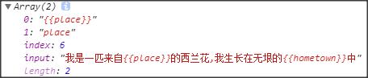

ajax工作总结
ajax原理
- 用在不刷新页面获取数据，用法是：创建异步对象 请求行 请求头 回调函数 请求主题
- 请求响应回来之后 会触发 回调函数 ，而我们渲染页面的操作就是写在回调函数中的
原生ajax
get请求
1.创建异步对象 var xhr=new XMLHttpRequest(); 2.设置请求行（get请求数据写在url后面） xhr.open('get','getData.php?name=rose&skill=swim'); 3.设置请求头（get请求可以省略，post不发送数据也可以省略） xhr.setRequestHeader() 3.1 注册回调函数 xhr.onload=function(){ console.log(xhr.responseText); ...修改dom元素 ... } 4.请求主体发送（get请求为空，或者写null,post请求数据写在这里，如果没有数据，直接为空或者写null） xhr.send(null);用户名验证
前端
<body> <h2>用户注册</h2> <h3>状态</h3> <!-- name属性不是必须的 form表单才是必须的 --> <!-- <input type="text" name='userName' placeholder="请输入用户名"> --> <input type="text" placeholder="请输入用户名"> </body> <script> // 什么时候发送请求? document.querySelector('input').onblur = function () { // 0.修改页面的提示信息 document.querySelector('h3').innerHTML = '验证中'; //1.创建对象 var xhr = new XMLHttpRequest(); //2.设置请求行(get请求数据写在url后面) xhr.open('get', 'checkName.php?name='+this.value); //3.设置请求头(get请求可以省略,post不发送数据也可以省略) //3.5注册回调函数 xhr.onload = function(){ console.log(xhr.responseText); document.querySelector('h2').innerHTML = xhr.responseText; // 修改提示信息 document.querySelector('h3').innerHTML = '验证完毕'; } //4.请求主体发送(get请求为空，或者写null，post请求数据写在这里，如果没有数据，直接为空或者写null) xhr.send(null); } </script>后端
<?php // 接收提交的数据 $_GET $name = $_GET['name']; // 假数据模拟 =>数组 $nameArr = array('jack','rose','icemountain','Robot'); // 判断是否在数组中存在 // 参数1 查询的内容 // 参数2 去哪个数组查询 $result = in_array($name,$nameArr); // 返回不同的内容给用户即可 if($result == true){ echo '很遗憾,已被注册,再选一个吧.o(╯□╰)o'; }else{ echo '恭喜你,还没人用呢!!快点注册哦 O(∩_∩)O哈哈~'; } // 恭喜你可以用 // 很遗憾用不了 sleep(2); ?>
post请求
1.创建异步对象 var xhr=new XMLHttpRequest(); //2.设置请求行 xhr.open('post',"postData.php"); 3.设置请求头 xhr.setRequestHeader("Content-type","application/x-www-form-urlencoded"); // 4.注册回调函数 4.xhr.onload=function(){ ..... } 5.xhr.send('name = 西兰花&friend = 鸡蛋');设置请求行时，xhr.open('get','xx.php',false); 参数3 是否使用异步，默认是true,false表示同步，同步：请求响应回来之前，什么事都干不了
注册回调函数时的另一种写法
xhr.onreadystatechange=function(){ // 只有状态码是4时，才去获取数据， if(xhr.readyState==4&xhr.status==200){ } }
请求xml文件
- xml的缺点
- 传输的数据量大，
- 解析略微有些复杂
- xml文件格式
<?xml version="1.0" encoding="UTF-8"?>
<root>
<name>周林林</name>
<age>18</age>
<skill>唱歌</skill>
</root>
- 后端php
<?php
// 告诉浏览器 返回的是 xml 编码格式是 utf-8
header('content-type:text/xml;charset=utf-8');
// 接收发送过来的数据
// 读取 xml
// =>哪个分类中 文件分类中找
// 参数1 文件的路径名
$xmlString = file_get_contents('data/person.xml');
// 返回读取的 xml
echo $xmlString;
?>
- 前端ajax请求
//注册回调函数
xhr.onreadystatechange=function(){
if(xhr.readyState == 4 && xhr.status == 200){
返回的是xml 通过responseText 只能获取到xml文件字符串
使用responseXML返回的是文档对象
<root>
<name>周林林</name>
<age>18</age>
<skill>唱歌</skill>
</root>
通过responseXML这个文档对象来解析
var name = xhr.responseXML.querySelector('name').innerHTML;
var age = xhr.responseXML.querySelector('age').innerHTML;
var skill = xhr.responseXML.querySelector('skill').innerHTML;
}
}
例子
xhr.onreadystatechange = function () { //4.1判断状态&请求是否成功并使用数据 if (xhr.readyState == 4 && xhr.status == 200) { // console.log(xhr.responseXML); // 解析 XML数据 var allHero = xhr.responseXML.querySelectorAll('hero'); // console.log(allHero); // 循环 挨个 取出来 // 创建ul var ulDom = document.createElement('ul'); // 添加到body中 document.body.appendChild(ulDom); for (var i = 0; i < allHero.length; i++) { // 当前循环的那个英雄 var currentHero = allHero[i]; // 路径 var icon = currentHero.querySelector('icon').innerHTML; // 名字 var name = currentHero.querySelector('name').innerHTML; console.log(icon + '||' + name); // 创建li var liDom = document.createElement('li'); liDom.innerHTML = '<img src="' + icon + '">--<span>' + name + '</span>'; // 添加到ul中 ulDom.appendChild(liDom); } } }
请求JSON数据
- JSON 是一种数据的格式
- JSON跟编程语言没有关系
- JSON的载体是字符串
- 基本上所有的编程语言都支持JSON
- 语法简洁， 基本上所有的编程语言 都提供了对应的方法来解析JSON
- JSON格式的字符串 会变成数组 对象
JSON的写法---用来表示对象
- 对象使用{}
- 属性名 必须使用 "" 包裹
属性值 必须使用 "" 包裹 如果属性值是数值，可以不使用双引号
var JSONobject='{"name":"zhangsan","skill":"失忆"}'
JSON数据转化为对应的 对象（数组）
var obj=JSON.parse(JSONobject)
- JSON的写法 ---- 用来表示数组
var JSONArr = '["绿色的花菜","大蒜","大葱","番茄","圣女果"]';
- 转化为 对应的数组（对象）
var arr = JSON.parse(JSONArr);
demo1
stars.json数据
[{ "name": "吴京", "skill": "徒手抓狼" }, { "name": "吴彦祖", "skill": "帅气" }, { "name": "张国荣", "skill": "霸王别姬" }, { "name": "林俊杰", "skill": "小酒窝--美美哒" } ]后端php
<?php // JSON也要设置一段内容 (可选) // 告诉浏览器 返回的是 JSON格式的数据 编码是 utf-8 header('content-type:application/json;charset=utf-8'); // 读取JSON文件 $jsonString = file_get_contents('data/stars.json'); // 返回读取的内容 echo $jsonString; ?>前端
xhr.onreadystatechange = function () { //4.1判断状态&请求是否成功并使用数据 if (xhr.readyState == 4 && xhr.status == 200) { // JSON的载体是字符串 用responseText 即可获取 console.log(xhr.responseText); // 转化为 对应的 对象(数组) var arr = JSON.parse(xhr.responseText); console.log(arr); // 遍历打印 for(var i =0;i<arr.length;i++){ var currentObj = arr[i]; console.log('姓名:'+currentObj.name+' 技能:'+currentObj.skill); } } }
- demo2
document.querySelector('input').onclick = function () {
//1.创建异步对象
var xhr = new XMLHttpRequest();
//2.设置请求行
xhr.open('get', 'backHero.php');
//3.设置请求头(get请求可以省略)
//4.注册状态改变事件
xhr.onreadystatechange = function () {
//4.1判断状态&请求是否成功并使用数据
if(xhr.readyState==4&&xhr.status==200){
// console.log(xhr.responseText);
// 解析JSON数据
var heroArr = JSON.parse(xhr.responseText);
console.log(heroArr);
// 准备字符串
var html = '';
// table - 开头
html='<table>';
// 生成tr
for(var i =0;i<heroArr.length;i++){
// 当前循环的对象
var currentHero = heroArr[i];
// tr -开头
html+='<tr>';
// td
html+='<td>'+currentHero.champion_name+'</td>';
html+='<td>'+currentHero.champion_title+'</td>';
html+='<td><img src="'+currentHero.champion_icon+'"></td>';
// tr -结尾
html+='</tr>';
}
// table - 结尾
html+='</table>';
// 拼接好了 table
console.log(html);
// 设置到页面上
document.querySelector('.show-box').innerHTML = html;
// document.querySelector('.show-box').innerHTML(html);
}
}
//5.发送请求
xhr.send(null);
}
原生js封装ajax
// 只传递一个参数
// 用户传入的是 对象
/*
键名
url
type
data
success
用户不需要记忆 参数的顺序 只需要记忆 参数的属性名即可
大部分的框架 都是这么做的
*/
function ajax(option) {
var xhr = new XMLHttpRequest();
// 如果是get 并且有数据
if (option.type == 'get' && option.data) {
option.url += '?';
option.url += option.data;
option.data = null; // 这样最后直接send data即可
}
xhr.open(option.type, option.url);
// post请求 并且有数据
if (option.type == 'post' && option.data) {
xhr.setRequestHeader('Content-type', 'application/x-www-form-urlencoded');
}
xhr.onreadystatechange = function () {
if (xhr.readyState == 4 && xhr.status == 200) {
// option.success(xhr.responseText);
// console.log(xhr.getResponseHeader('Content-Type'));
var type = xhr.getResponseHeader('Content-Type');
// 是否为json
if (type.indexOf('json') != -1) {
option.success(JSON.parse(xhr.responseText));
}
// 是否为xml
else if (type.indexOf('xml') != -1) {
option.success(xhr.responseXML);
}
// 普通字符串
else {
option.success(xhr.responseText);
}
}
}
xhr.send(option.data);
}
登录注册功能简单的实现
后端php
check.php 检查用户名是否已被注册
<?php // header('content-type:text/html;charset=utf-8'); // 为了能够自动转化 设置返回的内容为json header('content-type:application/json;charset=utf-8'); // 接受发送的数据 $_GET $name = $_GET['name']; // 读取json格式字符串 string $jsonString = file_get_contents('./data/arr.json'); // php中 也有 转化JSON格式字符串的代码 // string->arr(obj) // print_r(json_decode($jsonString)); $nameArr = json_decode($jsonString); // 数组的操作 // 判断 某个值 是否在 数组中 $result = in_array($name,$nameArr); // 准备一个 返回数据的 关系型数组 $backInfo = array(); // true false if($result==true){ // 用户名存在 用不了 $backInfo['message'] = '真遗憾,已被注册'; $backInfo['status'] = 'cannot'; }else{ // 如果为false 可以用 $backInfo['message'] = '恭喜你,可以使用'; $backInfo['status'] = 'can'; } // PHP中 关系型数组 // print_r($backInfo); // 为了 让浏览器 解析方便 把数组 转化为 JSON格式的字符串 // arr ->JSON string echo json_encode($backInfo); // 延迟一会 sleep(2); ?>register.php 注册
<?php // 接受提交的数据 $_POST $name = $_POST['name']; // 读取出JSON // string $jsonString = file_get_contents('./data/arr.json'); // 转化为 PHP对象 (数组) // string->arr $nameArr = json_decode($jsonString); // 数组的末尾追加 // arr $nameArr[count($nameArr)] = $name; // 转化为JSON格式的字符串 $newJsonString = json_encode($nameArr); // 写入 json文件中 // 参数1 写入的文件 // 参数2 写入的数据 file_put_contents('./data/arr.json',$newJsonString); // 提示用户 注册成功了 echo '注册成功'; sleep(2); ?>
前端页面
<!--
需求们
需求1
失去焦点
开启遮罩层 -- cover
--ajax验证用户名
文本框--inputName
调用验证用户名接口
请求回来之后
关闭遮罩层
修改文本框之后的提示 --tips
延迟一会之后消失
需求2
按钮根据是否可以注册 变绿
可以->变绿
不可以->不变
需求3
点击注册按钮
弹出遮罩层
--注册--ajax--接口文档
请求回来之后
关闭遮罩层
信息设置给 提示tips
需求4
注册按钮 不能一直点
当注册按钮 有disable这个类 就不能点
判断类名
提示用户
阻断后续代码执行
反之可以点
需求5
注册成功之后
禁用按钮的点击
添加类名
-->
<script>
$(function () {
$('.inputName').blur(function () {
// 遮罩层 开
$('.cover').show();
// ajax
$.ajax({
url: '_api/01.check.php',
type: 'get',
data: 'name=' + $('inputName').val(),
success: function (data) {
// 遮罩层-关
$('.cover').hide();
// 修改span的内容 淡入淡出
$('.tips').html(data.message).fadeIn(1000).delay(1000).fadeOut(1000);
// 判断内容 开启按钮的点击
if (data.status == 'can') {
$('.sub').removeClass('disabled');
}
}
})
})
// 点击注册按钮
$('.sub').click(function () {
// 有类名 禁止发送
if ($(this).hasClass('disabled') == true) {
alert('哥们,别点了');
return;
}
// 遮罩层-开
$('.cover').show();
// ajax请求
$.ajax({
url: '_api/register.php',
type: 'post',
data: 'name=' + $('.inputName').val(),
success: function (data) {
$('.cover').hide();
// 响应回来之后 关闭
$('.tips').html(data).fadeIn(1000).delay(1000).fadeOut(1000);
console.log(data);
// 禁用按钮的点击 添加类名
$('.sub').addClass('disabled');
}
})
})
})
jquery中的ajax
$.ajax({
url:'../00.backData/backJSON.php',
success:function(data){
console.log(data);
},
error:function(XMLHttpRequest, textStatus, errorThrown){
console.log('失败了哦');
console.log(XMLHttpRequest);
console.log(textStatus); //错误信息
console.log(errorThrown); 、、 错在哪里
},
complete:function(){
console.log('请求完成了');
}
})
模板引擎的使用
- 1.导入template-web.js
2.定义模板
type 不写 或者是 text/javascript 会被解析为 js,如果写成其他的内容 不会被当做js解析
<script type='text/html' id='templatename'> <ul> <li>名字{{name}}</li> <li>技能{{skill}}</li> <li>爱好{{habbit}}</li> </ul> </script>
3.填坑
<script>
var data = {
name:'彭林',
skill:'约跑',
habbit:'跑的一手好步'
};
// 填坑
// 参数1 模板的id
// 参数2 填充的数据
var result = template('templatename',data);
console.log(result);
document.body.innerHTML = result;
</script>
exec() 方法用于检索字符串中的正则表达式的匹配
- RegExpObject.exec(string)
- 返回一个数组，其中存放匹配的结果。如果未找到，则返回值为null,此数组的第 0 个元素是与正则表达式相匹配的文本，第 1 个元素是与 RegExpObject 的第 1 个子表达式相匹配的文本（如果有的话），第 2 个元素是与 RegExpObject 的第 2 个子表达式相匹配的文本（如果有的话），以此类推。

模板引擎原理
- 通过id获取 模板中的内容==>字符串
- 调用时，
- 找到字符串中的特殊符号{{name}}===>正则表达式
- 使用对象对应的属性 进行替换
- 返回字符串
自己封装一个简易的模板引擎
function my_template(id,data){
// 字符串
var str = document.querySelector('#'+id).innerHTML;
// 定义正则
var reg = /{{(\w+)}}/; //{{开头 字母\w 最起码1个+ }}结尾
// 循环替换 直到 为null 结束
var result = reg.exec(str);
while(result){
str = str.replace(result[0],data[result[1]]);
result = reg.exec(str);
}
// 获取结果
return str;
}
模板引擎的使用
模板引擎语法：
逻辑语句---条件语句
<script id='ifTemplate' type="text/html"> <ul> {{if male=='女'}} <li>欢迎您 {{name}} 女士 <ol> <li>这是最新款的包包</li> <li>这是最新款的口红</li> <li>没想到,你竟然是{{skill}}</li> </ol> </li> {{else if male=='男'}} <li>欢迎您 {{name}} 先生 <ol> <li>这是最新款的拖拉机</li> <li>讨厌,才来找人家</li> <li>没想到,你竟然稍长{{skill}}</li> </ol> </li> {{/if}} </ul> </script> <script> var person1 = { male: '女', name: '郑爽', skill: '身材好' }; var person2 = { male: '男', name: '张翰', skill: '这篇鱼塘我承包了' }; console.log(template('ifTemplate', person1)); console.log(template('ifTemplate', person2)); </script>原文输出（解析标签语句）{{@...}}
<script id='norTemplate' type="text/html"> <ul> <li>{{name}}</li> <li>{{skill}}</li> <li>{{@info}}</li> </ul> </script> <script> var person = { name:'犬夜叉', skill:'变犬', info:'<a href="https://baike.baidu.com/item/%E7%8A%AC%E5%A4%9C%E5%8F%89/26878?fr=aladdin">犬夜叉</a>' } document.body.innerHTML = template('norTemplate',person); </script>循环语句
<script id='eachTemplate' type="text/html"> <ul> <li>{{name}}</li> <li>兄弟们 {{each brother}} <li>{{$value}}</li> {{/each}} </li> <li>家人们 <ol> {{each family}} <li>{{$value.name}}---{{$value.skill}}</li> {{/each}} </ol> </li> </ul> </script> <script> var person = { name:'大娃', brother:[ '二娃', '三娃', '水娃', '火娃', '千里眼娃', '瓜娃子' ], family:[ {name:'爷爷',skill:'被抓'}, {name:'穿山甲',skill:'到底说了什么'}, {name:'小蝴蝶',skill:'撩--葫芦娃'} ] } console.log(template('eachTemplate',person)); </script>
瀑布流插件的使用
- 1.导入jQuery
- 2.导入瀑布流插件
- 3.准备对应的html结构
<div class="grid">
<div class="grid-item-1 grid-item">...</div>
<div class="grid-item-2 grid-item">...</div>
<div class="grid-item-3 grid-item">...</div>
<div class="grid-item-1 grid-item">...</div>
<div class="grid-item-2 grid-item">...</div>
<div class="grid-item-3 grid-item">...</div>
</div>
- 4.调用对应的方法
<script>
// 调用瀑布流插件实现布局
$('.grid').masonry({
// itemSelector: '.grid-item',
// 列宽
// columnWidth: 200
});
</script>
瀑布流结合ajax的经典应用
- 后台php页面
<?php
// 设置返回的为 json
header('content-type:application/json;charset=utf-8');
if(array_key_exists('currentPage',$_POST)&&array_key_exists('pageSize',$_POST)){
// 获取 数据
// 页码
$currentPage = $_POST['currentPage'];
// 页容量
$pageSize = $_POST['pageSize'];
// 读取数据 string
$jsonString = file_get_contents('../info/data.json');
// 转化 string -> obj
$totalArr = json_decode($jsonString);
// var_dump($totalArr);
// 获取 指定的数据
// 假设 第一页 页容量为5 (1-1) * 5 = 0;
// 假设 第二页 页容量为5 (2-1) * 5 = 5;
$pageData = array_slice($totalArr,($currentPage-1)*$pageSize,$pageSize);
// 返回给用户 当前页
$currentPage;
// 总页数 根据用户传递的参数 叶荣良计算出来的
$totalPage = ceil(count($totalArr)/$pageSize);
// 包装为 关系型数组
echo json_encode( array(
'currentPage'=>$currentPage,
'totalPage'=>$totalPage,
'message'=>'success',
'pageSize'=>$pageSize,
"items"=>$pageData
));
}else{
echo json_encode(array(
'message'=>'pageSize and currentPage is necessary please check and retry'
));
}
sleep(2);
?>
- 前端页面
<!DOCTYPE html>
<html>
<head>
<meta charset="UTF-8">
<title>JQuery 实现瀑布流</title>
<style>
body {
text-align: center;
margin: 0;
padding: 0;
background-color: #F7F7F7;
font-family: '微软雅黑';
}
.wrapper {
padding: 50px;
}
img {
display: block;
width: 100%;
height: 300px;
}
.items {
position: relative;
/* display: flex; */
/* 环函 */
/* flex-wrap: wrap; */
}
.item {
width: 228px;
position: absolute;
}
.tips {
width: 280px;
height: 40px;
margin: 30px auto 0;
text-align: center;
line-height: 40px;
background-color: #CCC;
border-radius: 6px;
font-size: 24px;
cursor: pointer;
}
.tips.loading {
/* background-color: transparent; */
background-color: hotpink;
}
.tips.disabled {
background-color: gray;
cursor: not-allowed;
}
* {
transition: all 1s;
}
</style>
</head>
<body>
<h1>瀑布流 展示页面</h1>
<div class="wrapper">
<!-- items 作为 瀑布流的容器 瀑布流中的 元素的 宽度 是固定的 -->
<div class="items">
</div>
<p class="tips loading">正在加载...</p>
</div>
</body>
</html>
<!-- jQ -->
<script src="./js/jquery-1.12.4.min.js"></script>
<!-- 模板引擎使用步骤
1.引入模板引擎
2.根据数据定义模板
3.挖坑
4.填坑使用
-->
<script src="./js/template-web.js"></script>
<script id='template' type="text/html">
{{each items}}
<div class="item">
<img src="{{$value.path}}" alt="">
<p>{{$value.text}}</p>
</div>
{{/each}}
</script>
<!-- 引入瀑布流插件 -->
<script src="./js/masonry.pkgd.min.js"></script>
<!-- 自己的js -->
<script>
$(function () {
// 定义页码
var my_currentPage = 1;
// 点击变....
$('.tips').click(function () {
// 添加判断类名的代码
if($(this).hasClass('disabled')==true){
alert('哥们,别点了,已经是最后一页了哦');
return;
}
// .
$(this).html('.');
var $this = $(this);
// 定时器
var interId = setInterval(function () {
var oldStr = $this.html();
// 判断长度
if (oldStr.length > 16) {
oldStr = '';
}
// 累加 .
oldStr += '.';
// 赋值给元素的内容
$this.html(oldStr);
}, 100)
// ajax获取数据
$.ajax({
url: 'api/waterFall.php',
type: 'post',
data: {
currentPage: my_currentPage,
pageSize: 40
},
success: function (data) {
console.log(data); //测试代码
// 清除定时器
clearInterval(interId);
// 修改内容为 1/xx
$('.tips').html(data.currentPage + '/' + data.totalPage);
// 渲染页面 -- 模板引擎
var result = template('template', data);
// console.log(result); //测试代码
var $dom = $(result);
// $('.items').append(result);
// 瀑布流
/*
通过例子查看 缺少的代码
通过文档 查看 方法的说明
复制过来测试
不对 检查 是不是 参数不对
*/
$('.items').masonry({
transitionDuration: 0
}).append($dom).masonry('appended', $dom).masonry();
// 页码 累加
my_currentPage++;
// 判断是否是最后一页
if(data.currentPage==data.totalPage){
// 添加类名
$('.tips').addClass('disabled');
}
}
})
})
})
</script>
同源的概念
- 协议 ，地址，端口号三个条件都一样，称之为 同源
- 三个条件 有一个不一样，称之为不同源
跨域的概念
- 不同源的网站之间 互相发送请求 称之为跨域
解决方法
- 1.设置反向代理
- 2.服务器端设置允许跨域 header('Access-Control-Allow-Origin: *');
3.在ajax函数的参数对象中增加一个属性 dataType:'jsonp'
- jsonp就是利用了 src属性支持跨域获取资源
jsonp的真实用法
<script> function doSomething(data){ console.log(data); } </script> <script src="http://www.127.com/2017-8-17/12.JSONP/backData.php?callback=doSomething"> </script>后端服务器支持jsonp的原理
<?php // echo 'console.log("数据给你,拿去")'; // doSomething $methodName = $_GET['callback']; // 把数据 拼接到 函数名的后面 echo $methodName.'({"name":"jack","food":"西兰花"})'; ?>jquery格式化表单数据
<!DOCTYPE html>
<html lang="zh-CN">
<head>
<meta charset="UTF-8">
<title>title</title>
</head>
<body>
<h2>jQuery格式化表单数据</h2>
<form action="">
<input name='name' type="text" placeholder="用户名">
<input name='tel' type="text" placeholder="电话">
<input name='email' type="text" placeholder="邮箱">
<input name='address' type="text" placeholder="地址">
</form>
</body>
</html>
<script src="./jquery-1.12.4.js"></script>
<script>
$(function(){
$('h2').click(function(){
var data = $('form').serialize();
console.log(data);
})
})
</script>
//输入后 点击 name=12&tel=12&email=12&address=234
ajax上传文件及进度条
- 前端
<h2>XMR2.0</h2>
<!-- 技术是在不停的升级,XMLHttpRequest
1. 快速格式化表单数据
2. ajax上传文件
3. 上传进度监控
-->
<form action="">
<input type="text" name="name" placeholder="用户名">
<input type="text" name="email" placeholder="邮箱">
<input type="text" name="address" placeholder="地址">
<input type="file" name="icon">
</form>
<input type="button" value='ajax发送数据'>
<div class="progress">
<div class="step"></div>
</div>
</body>
</html>
<script>
// 点击事件
document.querySelector('input[type=button]').onclick = function () {
// ajax请求
var xhr = new XMLHttpRequest();
// 快速格式化表单数据 要使用 post
xhr.open('post', 'backData.php');
// 如果使用自动化表单 不需要设置请求头
// 回调函数
xhr.onreadystatechange = function () {
if (xhr.readyState == 4 && xhr.status == 200) {
console.log(xhr.responseText);
}
}
// 格式化表单
// 兼容性问题 使用频率 不是很高了解的知识点
var sendData = new FormData(document.querySelector('form'));
// 上传回调函数
xhr.upload.onprogress = function (event) {
// console.log(event);
var percent = event.loaded / event.total * 100 + '%';
console.log(percent);
document.querySelector('.step').style.width = percent;
}
xhr.send(sendData);
}
</script>
- 后端
<?php
print_r($_POST);
print_r($_FILES);
// 抢救出来
/*
Array
(
[icon] => Array
(
[name] => 01.png
[type] => image/png
[tmp_name] => C:\Users\51772\AppData\Local\Temp\phpC23C.tmp
[error] => 0
[size] => 22756
)
)
*/
move_uploaded_file($_FILES['icon']['tmp_name'],'./files/'.$_FILES['icon']['name']);
?>